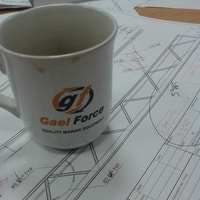
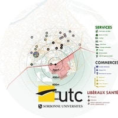

About
A brief overlook of my route through urban plangineering.
-

September 2014
Humanities and Technology
I began my studies by combining technical learning with philosophical reflection. Although these fields may seem unrelated, I am convinced that the understanding they provide on our society and infrastructures enables to better practice urban planning.
-

Summer 2015
Internship in Scotland
As my will to live and grow as a professional grew up during my engineering curriculum, I joined the teams of Gael Force Engineering, a Scottish company specialized into the aqua-culture industry. I worked in the office… and the yard!
-

Summer 2016
GIS Analyst Job
Sometimes it’s good to give back to our community: in the summer 2016, I worked for my hometown city hall’s GIS department. I helped the growing team to map projects and keep land use data up-to-date.
-

Fall + Spring 2017
Urban Planning Contest
I understood the benefits of cross-field approaches when I competed in the #7 Ergapolis challenge. After 5 months of wonderful collaboration, our team made of architects, landscape designers, engineers and planners won the award for its comprehensive proposals. My favorite extra-curricular experience – so far.
-
Spring 2017
Urban Design Internship
Increasing quality of life of urban residents is driving my practice of urban planning. To deepen my skills in urban programming, I joined the Paris-based agency Ville Ouverte, a French leading company in community development.
-

September 2017
Urban Engineering, a Love Story
After several thoughtful experiences in urban planning, I engaged in a master in Urban Engineering. My classes in Urban Design, Statistics, Urban Programming, Watershed Management or 3D Modelling enabled me to develop my urban knowledge.
-
Spring 2018
Reinventing Urban Sustainability Research
French planners are challenged with the “Réinventer” contests set up by Paris Mayor to promote innovative and sustainable cities. As this method recently got international through Reinventing Cities, I co-conducted a research on emerging practices for sustainable planning, by interviewing 30 professionals. The study got presented through a public conference and published in French on Medium.
-
Fall 2018
Exchange Program in UP in the US
To complete my understanding of international urban planning practices, I am now deepening my skillset at the University of Illinois. Through courses in Political Economy, Pedestrian Planning or Urban Economics, I hope to enlarge my vision to design cities.
-
What Is
The Next
Step?